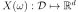
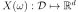

SpectralModel¶
-
class
SpectralModel(*args)¶ Spectral density model.
Notes
We consider
 a multivariate
stochastic process of dimension
a multivariate
stochastic process of dimension  , where
, where  is an event,
is an event,  is a domain of
is a domain of  ,
,
 is a multivariate index and
is a multivariate index and
 .
.We note
 the random variable at
index
the random variable at
index  defined by
defined by
 and
 a realization of the process
and
 a realization of the process
 , for a given defined by
, for a given defined by
 .
.If the process is a second order process, zero-mean and weakly stationary, we define its bilateral spectral density function
 with:
with:- is the set of d-dimensional positive hermitian matrices
Using the stationary covariance function
 with and the Fourier transform, the spectral density writes:
with and the Fourier transform, the spectral density writes:A SpectralModel object can be created only through its derived classes:
CauchyModelMethods
__call__(frequency)Evaluate the spectral density function for a specific frequency. computeStandardRepresentative(frequency)Compute the standard representant of the spectral density function. draw(*args)Draw a specific component of the spectral density function. getAmplitude()Get the amplitude parameter of the spectral density function. getClassName()Accessor to the object’s name. getId()Accessor to the object’s id. getImplementation(*args)Accessor to the underlying implementation. getInputDimension()Get the input dimension of the spectral density function. getName()Accessor to the object’s name. getOutputCorrelation()Get the spatial correlation matrix of the spectral density function. getOutputDimension()Get the dimension of the SpectralModel. getScale()Get the scale parameter of the spectral density function. setAmplitude(amplitude)Set the amplitude parameter of the spectral density function. setName(name)Accessor to the object’s name. setScale(scale)Set the scale parameter of the spectral density function. -
__init__(*args)¶ Initialize self. See help(type(self)) for accurate signature.
-
computeStandardRepresentative(frequency)¶ Compute the standard representant of the spectral density function.
Parameters: - tau : float
Frequency value.
Returns: - rho : Complex
Standard representant factor of the spectral density function.
Notes
According to definitions in
CovarianceModel, as the spectral density function is the Fourier transform of the stationary covariance function and using the expression of the last one, the spectral density function writes as a matrix-complex product where the matrix is the constant spatial covariance structure and the complex represents the standard representative:Thus,

where
 is a covariance matrix that explains the covariance structure and
is a covariance matrix that explains the covariance structure and

-
draw(*args)¶ Draw a specific component of the spectral density function.
Parameters: - rowIndex : int,

The row index of the component to draw. Default value is 0.
- columnIndex: int, :math:`0 leq columnIndex < dimension`
The column index of the component to draw. Default value is 0.
- minimumFrequency : float
The lower bound of the frequency range over which the model is plotted. Default value is SpectralModel-DefaultMinimumFrequency in
ResourceMap.- maximumFrequency : float
The upper bound of the frequency range over which the model is plotted. Default value is SpectralModel-DefaultMaximumFrequency in
ResourceMap.- frequencyNumber : int,

The discretization of the frequency range
![[minimumFrequency, maximumFrequency]](../../_images/math/edefa33278e693d719e1dd7dda192808ce526a1b.svg) over which the model is plotted. Default value is SpectralModel-DefaultFrequencyNumber in class:~openturns.ResourceMap.
over which the model is plotted. Default value is SpectralModel-DefaultFrequencyNumber in class:~openturns.ResourceMap.- module : bool
Flag to tell if module has to be drawn (True) or if it is the argument to be drawn (False). Default value is True.
Returns: - graph : Graph
Graphic of the specified component
- rowIndex : int,
-
getAmplitude()¶ Get the amplitude parameter of the spectral density function.
Returns: - amplitude :
Point The used amplitude parameter.
- amplitude :
-
getClassName()¶ Accessor to the object’s name.
Returns: - class_name : str
The object class name (object.__class__.__name__).
-
getId()¶ Accessor to the object’s id.
Returns: - id : int
Internal unique identifier.
-
getImplementation(*args)¶ Accessor to the underlying implementation.
Returns: - impl : Implementation
The implementation class.
-
getInputDimension()¶ Get the input dimension of the spectral density function.
Returns: - inputDimension : int
SpatialDimension of the SpectralModel.
-
getName()¶ Accessor to the object’s name.
Returns: - name : str
The name of the object.
-
getOutputCorrelation()¶ Get the spatial correlation matrix of the spectral density function.
Returns: - spatialCorrelation :
CorrelationMatrix Correlation matrix
![\mat{R} \in \mathcal{M}_{dimension \times dimension}([-1, 1])](../../_images/math/7c9f82b42bc374bc182daca5e4ec50c10aa34b60.svg) .
.
- spatialCorrelation :
-
getOutputDimension()¶ Get the dimension of the SpectralModel.
Returns: - dimension : int
Dimension of the SpectralModel.
-
getScale()¶ Get the scale parameter of the spectral density function.
Returns: - scale :
Point The used scale parameter.
- scale :
-
setAmplitude(amplitude)¶ Set the amplitude parameter of the spectral density function.
Parameters: - amplitude :
Point The amplitude parameter to be used in the spectral density function.
- amplitude :
-
setName(name)¶ Accessor to the object’s name.
Parameters: - name : str
The name of the object.